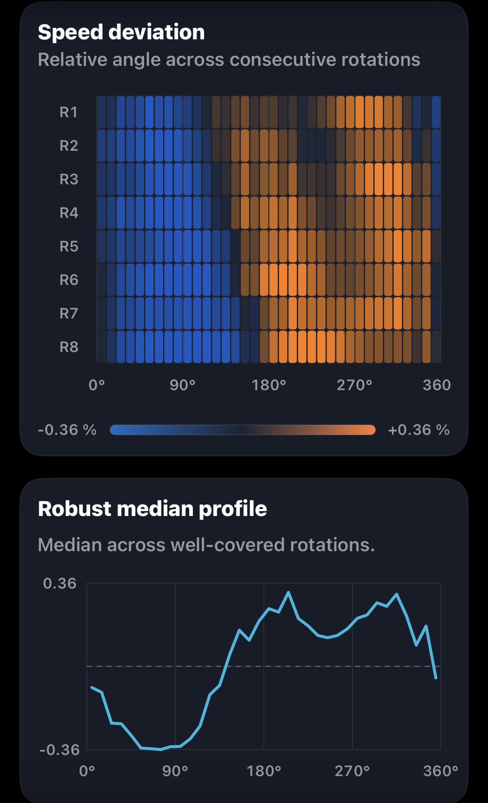
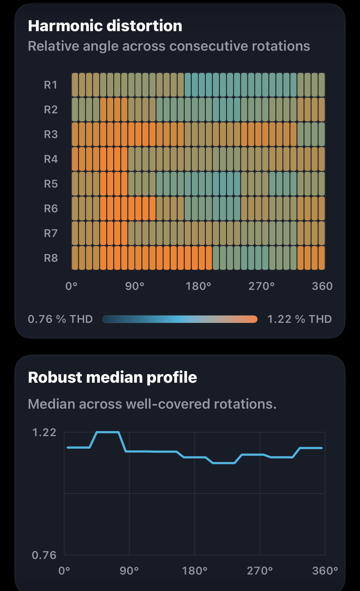
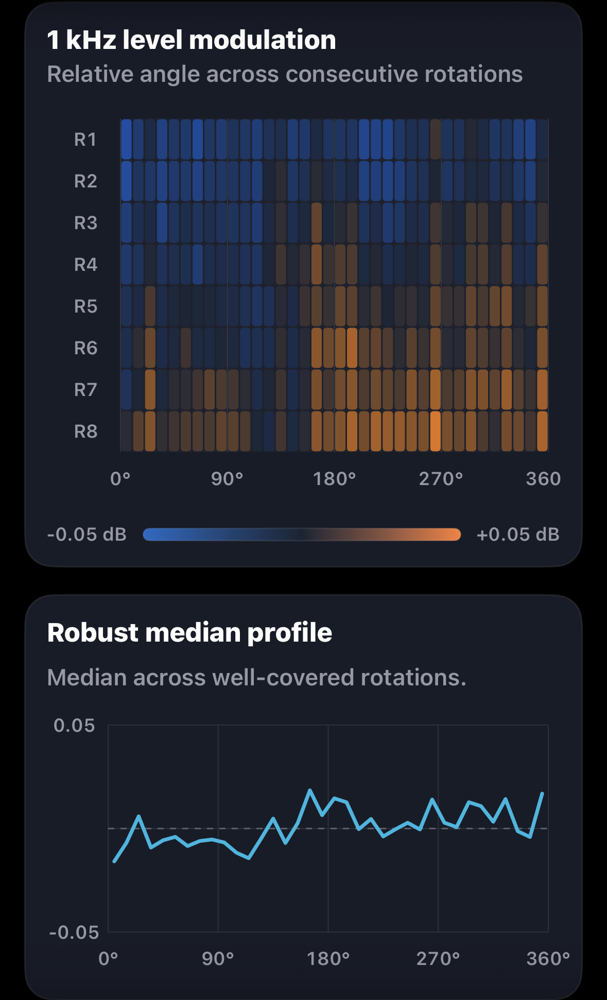

Speed deviation

Left channel selected
Groove Scope measurement · GS-2026-0012
Groove Scope Studio traced how the speed pattern evolved over eight turns. The cartridge was measured as found, with no azimuth adjustment or other tuning.

Measurement at a glance
These values describe the playback chain as found. They come from the original Groove Scope PDF.
Rotation fingerprints
Each view pairs Groove Scope’s angular heatmap with its robust median profile. Choose L or R on each card. Channel assignments follow the supplied filenames.

Left channel selected

Left channel selected

Left channel selected

Left channel selected
Both channels show eight revolutions (R1–R8), using each plot’s own angular reference. On smaller screens, swipe horizontally to browse all four plots.
Rotational behaviour
Both plots show slower and faster portions of the revolution. The shape and relative angle of those regions change across successive turns. That changing pattern is the standout feature of this capture.
Playback averaged 33.41 RPM, 0.23% above nominal, with 0.053% DIN-shaped wow and flutter RMS. The fingerprints show how the speed varied within each turn and how that pattern evolved. They leave the mechanical source and audibility of the variation open.
Azimuth and tracking
The report shows higher THD on the left (1.13% versus 0.80%) and more leakage from left to right (−22.2 dB versus −24.9 dB in the reverse direction). The measurer observed a visibly tilted cartridge body, reported a difference in treble response between channels and recorded a failed 70 µm tracking test. The supplied report and fingerprints cover a 1 kHz reference check. A frequency sweep would document the treble observation.
Ortofon specifies 80 µm tracking ability at 315 Hz and recommends 1.5 g tracking force. With the test conditions unrecorded and no azimuth adjustment made, setup and a possible cartridge or stylus issue both remain open. Ortofon 2M Bronze specifications ↗
Measurement chain
The report identifies New Horizon, Ortofon 2M Bronze and ART. The turntable model, tonearm, ART model and capture input remain unrecorded.
Open technical record
The editorial review connects directly to the source report, structured record, checksums, measurement method and original asset archive.
Measurement results
The table preserves the report’s figures for playback speed, weighted and unweighted stability, channel behaviour and harmonic distortion.
| Metric | Measured result |
|---|---|
| Playback speed under stylus load | 33.41 RPM |
| Playback speed error | +0.23% vs 33⅓ RPM |
| Settled speed range | 33.28–33.54 RPM |
| Settled speed span | 0.26 RPM |
| DIN-shaped wow & flutter RMS | 0.053% |
| Raw speed variation RMS | ±0.209% |
| Raw speed variation, 2-sigma | ±0.417% |
| Raw wow RMS | 0.201% |
| Raw flutter RMS | 0.054% |
| Channel balance, L−R | −0.47 dB |
| Average channel separation at 1 kHz | 23.6 dB |
| Electrical crosstalk, L→R | −22.2 dB |
| Electrical crosstalk, R→L | −24.9 dB |
| Crosstalk balance / directional difference | 2.64 dB |
| Total harmonic distortion | Left 1.13%, right 0.80% |
| THD difference, L−R | +0.33 percentage points (source report) |
| Second harmonic (H2) | Left −39.0 dB, right −42.0 dB |
| Third harmonic (H3) | Left −61.6 dB, right −64.3 dB |
| Fourth harmonic (H4) | Left −66.9 dB, right −67.1 dB |
| Fifth harmonic (H5) | Left −73.7 dB, right −72.4 dB |
| H2 difference summary | Left 3.0 dB higher (source report) |
| H3 difference summary | Left 2.7 dB higher (source report) |
| Harmonic reliability | Left H3 changed most during the recording. The report calls for a repeat before changing the cartridge setup. |
The directional crosstalk difference retains the report’s precision and may differ from subtraction of the rounded channel values.